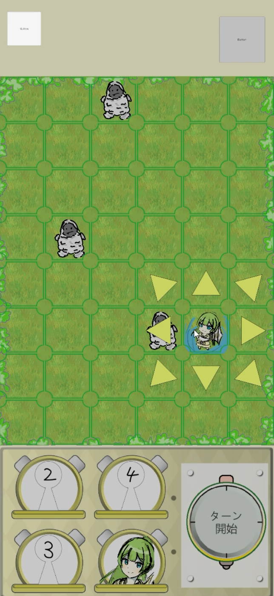
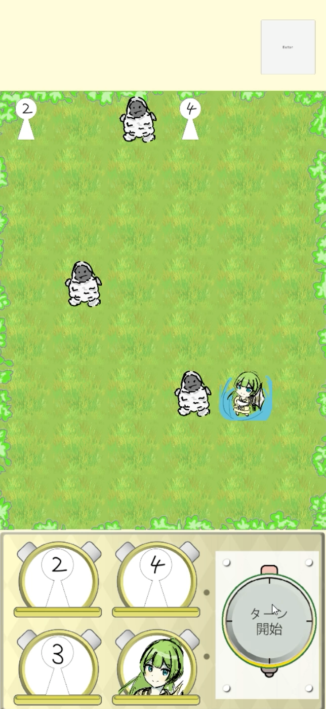
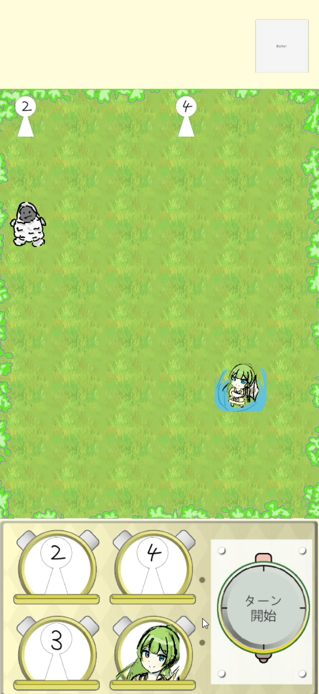

WORKING
-
戦闘画面
・この画像が今制作中のゲームの戦闘画面です。
・フィールドの緑の箇所は横6マス縦8マスのグリッドになっており、表示されている仮のキャラクターは盤面に配置されている敵です。 -

キャラ出撃選択画面
・自分のパーティーのキャラクターをフィールドに配置する時は下にある仮のキャラクターボタンを押すことで画像のような行動選択画面が開かれます。
・ここで表示されている四種類のボタンは左から、配置したターンに目の前の敵を攻撃する「通常攻撃」、一切動かないが全ての敵からの自分に向けさせる「惹きつけ」、残りの二つはダンジョンに入る前にあらかじめ組み合わせてセットしたスキルを使う行動をするボタンです。
(各ボタンにある右下の数字は配置してからフィールドを去るまでのターン数、左下の数字はフィールドを去ってから再び使えるようになるまでのクールタイムです。) -

キャラ方向選択画面
・自分のパーティーのキャラクターの行動を選択した後に、配置する場所を選択するとこのような画面になり、通常攻撃やスキルを出す方向を選択します。 -

キャラ配置完了画面
・この画面は自分のパーティーのキャラクターのうち置きたいキャラクターを全て配置した状態です。
・この状態でターン開始ボタンを押すことでターンが開始し、あらかじめ配置したキャラが配置した通りに動き、その後敵が移動や攻撃、特技を使用するなどします。
・今回は敵に隣り合っているキャラクター(4と書かれているキャラクター、イラストで表示されているキャラクター)が隣り合っている敵に攻撃し、敵と離れているキャラクター(2と書かれているキャラクター)が全ての敵を惹きつける「惹きつけ」を行っています。 -

ターン終了・
・先ほどのターンで２体の敵は味方の攻撃で力尽き、残りの１体は「惹きつけ」を行なっている味方を攻撃するために１マス移動しました。
次のターン準備画面
・通常攻撃を行なった味方キャラクターは先ほどの行動選択ボタンの右下にあったターン数フィールドに残り続けるため、今回のターンは留まります。
・「惹きつけ」を行なっているキャラクターも同様に行動選択ボタンの右下にあったターン数はフィールドに留まります。
今回は「通常攻撃」と「惹きつけ」のみですが、スキルの行動を編成して使うことでフィールドに出た後の行動ターンも伸び、より戦略的になると考えています。(スキルはダンジョンクリア時に排出予定)